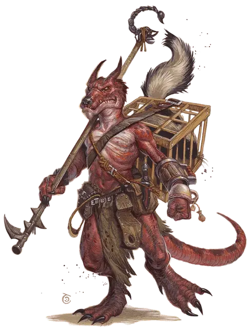

Кобольд изобретатель
Kobold Inventor
Маленький Гуманоид, любое мировоззрение

Класс Доспеха 12
Хиты 13 (3к6 + 3)
Скорость 30 футов
| мод | спас | ||
|---|---|---|---|
| СИЛ | 7 | −2 | −2 |
| ЛОВ | 15 | +2 | +2 |
| ТЕЛ | 12 | +1 | +1 |
| мод | спас | ||
|---|---|---|---|
| ИНТ | 14 | +2 | +2 |
| МДР | 10 | +0 | +0 |
| ХАР | 8 | −1 | −1 |
Чувства тёмное зрение 60 футов, пассивное Восприятие 10
Языки Общий, Драконий
Опасность 1/4 (50 опыта)
Бонус мастерства +2
Среда обитания Горы, Город, Лес, Подземье, Холмы
Особенности
Тактика стаи. . Кобольд обладает преимуществом на броски атаки против существа, если хотя–бы один его союзник находится на расстоянии 5 футов от существа и если при этом этот союзник дееспособен.
Чувствительность к солнечному свету. Кобольд совершает с помехой броски атаки и проверки Мудрости (Восприятие), основанные на зрении, находясь на солнечном свете.
Действия
Кинжал. . Рукопашная или Дальнобойная атака оружием: +4 к попаданию, досягаемость 5 футов или дистанция 20/60 футов, одна цель. Попадание: 4 (1к4 + 2) колющего урона.
Праща. . Дальнобойная атака оружием: +4 к попаданию, дистанция 30/120 футов, одна цель. Попадание: 4 (1к4 + 2) дробящего урона.
Изобретение оружия. Кобольд использует один из следующих вариантов (бросьте к8 или выберите одно); кобольд может использовать не больше одного варианта один раз в день:
• 1.Кислота. Кобольд бросает флакон кислоты. Дальнобойная атака оружием: +4 к попаданию, дистанция 5/20 футов, одна цель. Попадание: 7 (2к6) урона кислотой.
• 2.Алхимический огонь. Кобольд бросает флакон алхимического огня. Дальнобойная атака оружием: +4 к попаданию, дистанция 5/20 футов, одна цель. Попадание: 2 (1к4) урона огнём в начале каждого хода цели. Существо может прекратить этот эффект использовав действие и совершив проверку Ловкости Сл 10 для того, чтобы затушить пламя.
• 3.Корзина сороконожек. Кобольд бросает небольшую корзинку в пространство 5 на 5 футов не далее 20 футов от себя. Рой насекомых (сороконожек) с 11 хитами появляется из корзины и совершает бросок инициативы. В конце каждого хода стаи существует шанс в 50 %, что стая разбежится.
• 4. Кувшин зелёной слизи. Кобольд кидает глиняный кувшин зеленой слизи в цель и он разбивается при столкновении. Дальнобойная атака оружием: +4 к попаданию, дистанция 5/20 футов, одна цель. Попадание: 5 (1к10) урона кислотой и цель покрывается слизью до тех пор, пока не использует действие, что бы соскрести или смыть её с себя. Цель, покрытая слизью, получает 5 (1к10) урона кислотой в начале каждого своего хода.
• 5. Кувшин гнилых личинок. Кобольд кидает глиняный кувшин в пространство 5 на 5 футов в пределах 20 футов от себя и разбивается при столкновении. Рой трупных личинок появляется из разбитого кувшина и является угрозой в этом месте.
• 6. Скорпион на палочке. Кобольд совершает рукопашную атаку скорпионом, привязанным к концу 5–футовой палке. Рукопашная атака оружием: +4 к попаданию, досягаемость 5 футов, одна цель. Попадание: 1 колющего урона и цель должна совершить спасбросок Телосложения Сл 9, получая 4 (1к8) урона ядом при провале или половину этого урона при успехе.
• 7. Скунс в клетке. Кобольд выпускает скунса на незанятое место в 5 футах от себя. У скунса скорость 20 футов, КД 10, 1 хит и нет эффективных атак. Он совершает бросок инициативы и в свой ход он использует действие струя мускуса в случайное существо в 5 футах от себя. Цель должна совершить спасбросок Телосложения Сл 9. При провале цель начинает рвать и она становится недееспособной на 1 минуту. Цель может повторять спасбросок в конце каждого своего хода, оканчивая эффект при успехе. Существо, которому не требуется дышать или имеет иммунитет к яду, автоматически преуспевает в спасброске. Когда скунс использовал струю мускуса, он не может сделать это снова пока не завершит короткий или продолжительный отдых.
• 8. Осиное гнездо в сумке. Кобольд бросает маленькую сумку в пространство 5 на 5 футов не далее 20 футов от себя. Рой насекомых (ос) с 11 хитами появляется из сумки и совершает бросок инициативы. В конце каждого хода стаи существует шанс 50 процентов, что стая разлетится.
Описание
У мастеровитых кобольдов–изобретателей ловкие руки, которыми они конструируют импровизированное оружие, которое, как они надеются, даст им преимущество в бою. Новые орудия кобольдов–изобретателей обычно выдерживают одну–две атаки перед тем, как сломаться, но зато при нанесёнии этих атак они удивительно действенны. Эти оружия не обязательно смертоносны – во многих случаях их предназначение – отвлечь, испугать или запутать существо на время, достаточно долгое, чтобы другие кобольды успели убить врага.